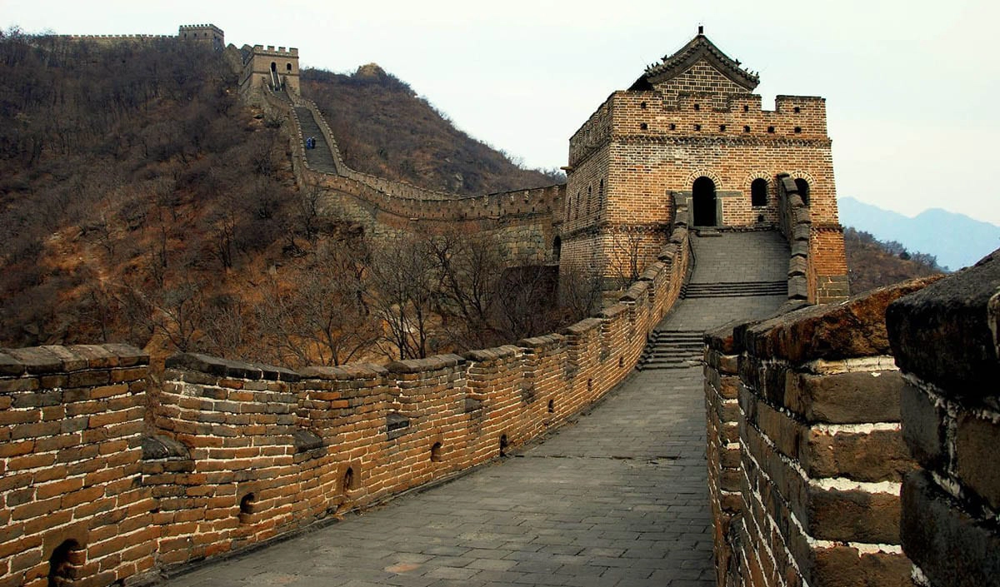
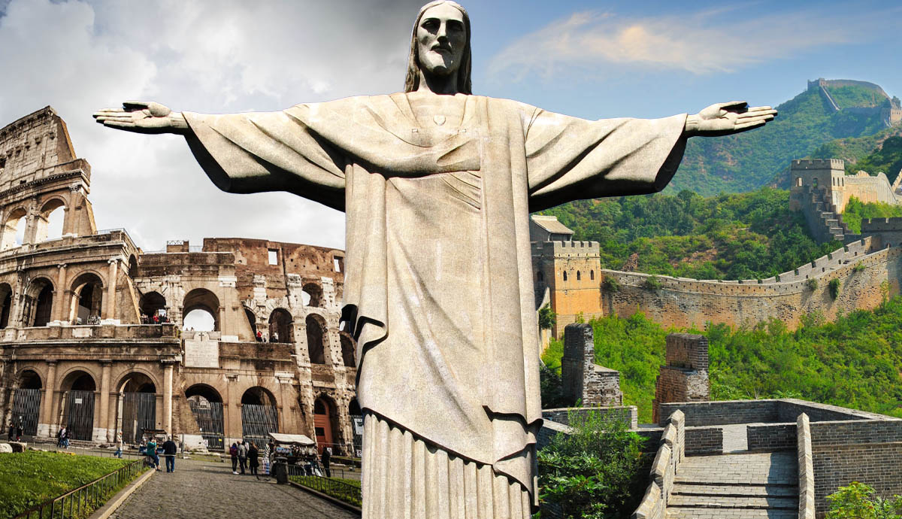
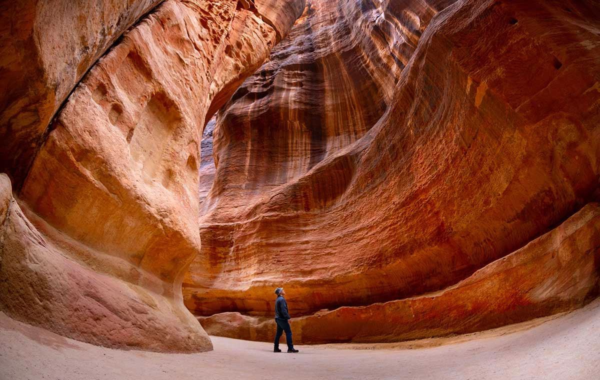

ABOUT 7 WONDERS
The Colosseum

1.The Colosseum is the great oval amphitheater in the center of Rome where gladiators once fought for their lives and the pleasure of the crowd. The largest amphitheater ever built, it was constructed from sand and stone over eight years, from 72 to 80 CE. The colossal structure could hold 80,000 spectators, arranged in a circular ring around the central stage. Dramatic and sometimes horrifying events took place here, not just gladiatorial games but also Classical plays, animal hunts, and executions. Some say water was even pumped into the arena to enact mock sea battles known as naumachia.
Panoramic view of the interior of the Colosseum
Panoramic view of the interior of the Colosseum
Although the Colosseum has been partially damaged by earthquakes and stone robbers over the centuries, it is still an iconic testament to Roman history, visited by thousands of tourists every year. Thus, it stands to reason that it would make the list of today’s seven wonders of the world.

The Great Wall of China
The Great Wall of China, c. 220 BCE
The Great Wall of China, built c. 220 BCE
The Great Wall of China is a huge barrier that spans thousands of miles along China’s historic northern border. Created over millennia, the wall began its life as a series of smaller walls dating back to the 7th century BCE, built as protective barriers against nomadic raids. In 220 BCE, China’s first Emperor, Qin Shi Huang, masterminded the unification of all of China’s walls into one almighty barrier, strengthening and extending the wall to keep out northern invaders.
great wall of china michael mcdonough
Part of the Great Wall of China, by Michael McDonough, 2012. Source: Smithsonian Magazine
Today, the Great Wall of China is recognized as one of the seven wonders of the world. Its total length, including all its branches, is a whopping 13,171 miles. While it used to be said that the China Great Wall could be seen from space, astronauts have confirmed that it cannot be seen with the naked eye from the moon.

The Taj Mahal
The Taj Mahal, India
The Taj Mahal
The Taj Mahal in Agra, India, built c. 17th century. Source: Architectural Dige
India’s renowned Taj Mahal (Persian for Crown of Palaces) is the stunning white marble mausoleum on the bank of the Yamuna River in the city of Agra. It has also been selected as one of the seven wonders of the world. Mughal emperor Shah Jahan built the temple as a tomb for his beloved wife, Mumtaz Mahal, who died during childbirth in 1631. A marble tomb in the center is surrounded by 42 acres of grounds, where gardens, a mosque, a guest house, and a pool complete the complex.
The entire project took over 22 years to complete by 20,000 workers at a cost of 32 million rupees (around US$827 million by today’s standards). But the hard work paid off. Today, the Taj Mahal is recognized as a UNESCO World Heritage Site and a vital component of India’s rich Mughal history.

The Christ the redeemerl
Christ the Redeemer, Brazil
Christ the Redeemer
Christ the Redeemer in Rio de Janeiro, Brazil, built 1931. Source: Conde Nast Magazine
The totemic statue of Christ the Redeemer stands over Rio de Janeiro on the top of Mount Corcovado. At 30 meters tall, this monument is an iconic emblem of Brazil. This huge public artwork was designed by the Polish-French sculptor Paul Landowski in the 1920s and completed by Brazilian engineer Heitor da Silva Costa and French engineer Albert Caquot in 1931. Made from reinforced concrete clad in over six million soapstone tiles, the Christ the Redeemer statue is the largest Art Deco sculpture in the world. Built just after the end of the First World War, the sculpture was an overpowering symbol of Christianity and hope when the world had been brought to its knees.
This is the only monument of the modern world that has made the list of wonders. Other modern world buildings have been suggested as potential wonders, including the Sydney Opera House in Australia; the Eiffel Tower in Paris, France; Beijing National Stadium in China; and Barcelona Pavilion in Spain.

The Machu Pichhu
Machu Picchu, Peru
Machu Picchu in the Andes Mountains, Peru, built c. 15th century. Source: Business Insider Australia
Machu Picchu is a lost treasure of the 15th century and a rare citadel discovered high in the Andes mountains above the Peruvian Sacred Valley. Astonishingly, it is one of the only pre-Columbian ruins found nearly intact, featuring evidence of former plazas, temples, agricultural terraces, and homes. Archaeologists believe the citadel was built as an estate for the Inca emperor Pachacuti in around 1450 in polished drystone walls.
temple condor machu picchu
Temple of the Condor at Machu Picchu, incorporating stone outcrops into the building itself. Source: Machu Picchu Travel Guide
The Incas abandoned the site a century later, and it remained hidden for centuries before being brought to public attention by American historian Hiram Bingham in 1911. Because of this remarkable preservation, it is recognized today as one of the seven wonders.
 The Chichen Itza
The Chichen Itza
Chichen Itza on the Yucatan Peninsula, Mexico, built c. 9th-11th centuries. Source: Air France
Deep in the Mexican state of Yucatán lies Chichen Itza, a historic Mayan city built between the 9th and 12th centuries. Constructed by the pre-Columbian Mayan tribe Itzá, the city includes a series of monuments and temples. The most celebrated is El Castillo, also known as the Temple of Kukulcan. It is a huge step pyramid in the center of the city which was built as a devotional temple to the god Kukulkan.Skull Wall at Chchen Itza
In total, the entire temple features 365 steps, one for each day of the year. Even more impressively, during the spring and summer equinoxes, the afternoon sun casts triangular shadows down the pyramid’s north stairway that resemble a feathered serpent slithering down its surface, heading towards a stone snake head at the base. No wonder it is one of the seven wonders today!

The Petra Jordan Itza
Petra, Jordan
Facade of the Al Khazneh building in Petra, Jordan, built c. 4th century BCE
Facade of the Al Khazneh building in Petra, Jordan, built c. 4th century BCE
Petra, the ancient city in southern Jordan, is also known as the “rose city” for its golden hue. It dates as far back as 312 BCE. Set in a remote valley, this city was founded by the Arab Nabataeans, a sophisticated civilization that carved stunning architecture and complex waterways out of surrounding rock faces. The Nabateans also established Petra as a successful trade hub, earning vast wealth and a booming population before being wiped out by earthquakes.